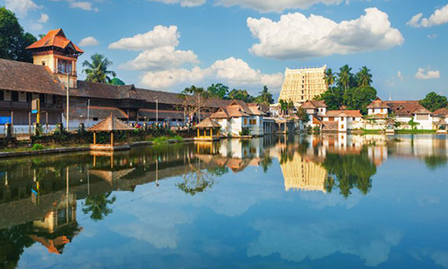
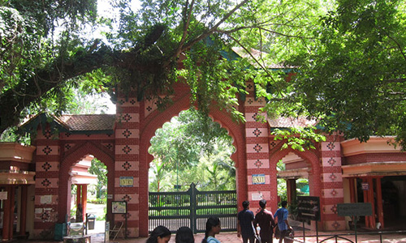
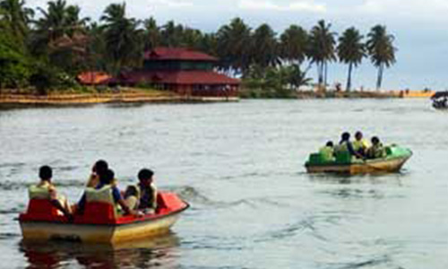
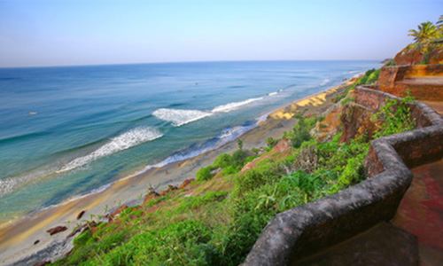

Trivandrum The capital city of Kerala
Thiruvananthapuram or Trivandrum is an appealing blend of a strongly rooted heritage and a nostalgic colonial legacy. Built upon seven hills, this city has long since left the days when it was only used by seafaring explorers behind - today, Trivandrum is a swanky metropolis with quaint urban charm and plenty of scenic places to visit. Proudly retaining its age-old cultural charm, Trivandrum offers a huge variety of sights including incredible museums, beautifully designed palaces, sacred temples and mesmerizing beaches, making the city one of the best tourist spots in South India.

Important Places to Visit
Neyyar Dam and Wild Life Sanctury
Thiruvanandapuram Zoo

Veli Tourist Village

Varkkala
